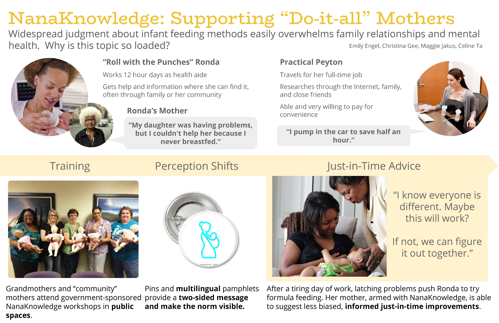

Breast Feeding
Redesigning a more sustainable experience | Sustainable Design
Sustainable Design was a class I took where we examined the breast pump, performed an LCA analysis and interviewed mothers as our user group to design a better and more sustainable system for breastfeeding.
For our first phase, we interviewed 11 users where we gathered key insights and were able to create personas and discover the core needs of mothers and their insights on breast feeding. We were then asked to put this information in a 11 x 17 poster

Phase II: Measuring Sustainable Impact
During Phase II we learned how to conduct an LCA in which we disected a breast pump and found the RECIPIE points for each item to calculate its overall sustainability score and comparing how sustainable the actual product is compared to the usage. As it turns out, formula feeding is actually the worst form of feeding for babies because of the manufacturing and CO2 emissions costs from producing formula. Thus we now had to think How can we think of a more sustainable solution that reduces CO2 emission but still meets the needs of mother?

Phase III: The Solution
Based on the needs of mothers needing to find more time to gain assistance with their breast
feeding problems at their convenience, we designed a program called "Nana Knowledge" that would allow grandmother sand community mothers to attend government-sponsored workshops in public and easily accessible place. These workshops would eventually lead to a certification in which these grandmothers or community mothers would be able to pass on the knowledge to people like Ronda or Peyton who do not have the time to attend these workshops. We assumed that the impact of this program will help reduce the conversion rate of mothers switching to formula, and thus will help lower the enviornmental impact.
